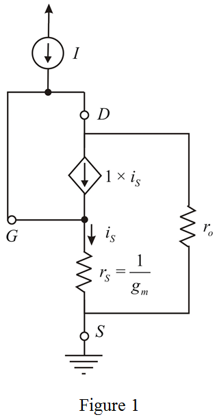
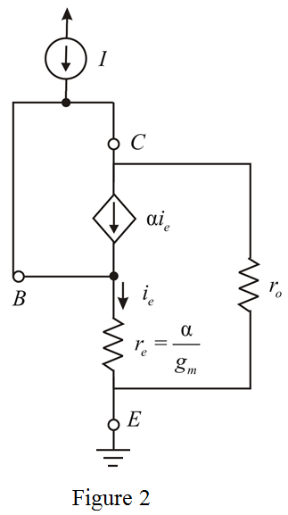

Step 1:
Refer to Figure P7.95 (a) in the textbook.
Draw the small signal equivalent circuit diagram of the circuit in Figure P7.95 (a).

Step 2:
Since gate and drain terminals are connected to each other, effect of dependent current source is neglected. Hence, the incremental resistance is due to parallel combination of resistors and 
The value of output resistance is,
Calculate the value of incremental resistance,
Substitute for  ,
,  for
for  and
and  for
for 
Thus, the value of incremental resistance,  is .
is .
Step 3:
Refer to Figure P7.95 (b) in the textbook.
Draw the small signal equivalent circuit diagram of the circuit in Figure P7.95 (b).

Step 4:
Since base and collector terminals are connected to each other, effect of dependent current source is neglected. Hence, the incremental resistance is due to parallel combination of resistors  and
and  .
.
The value of output resistance is,
Calculate the value of incremental resistance,  .
.
Substitute  for
for  ,
,  for
for  and
and  for
for  .
.
Thus, the value of incremental resistance,  is .
is .